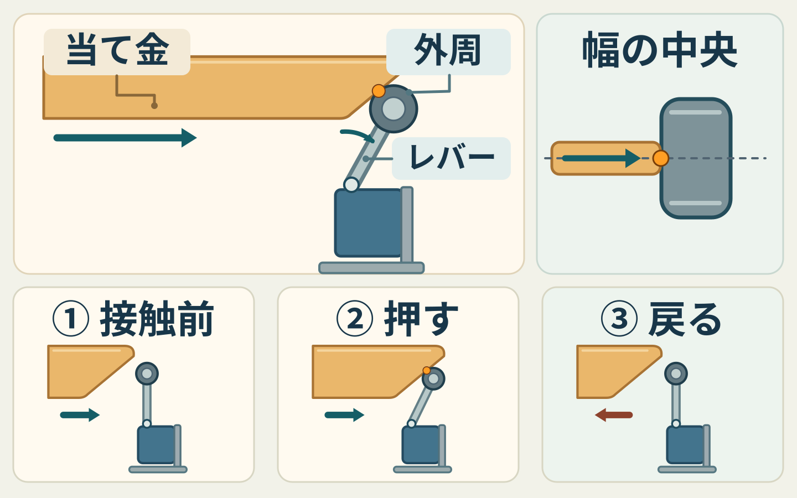
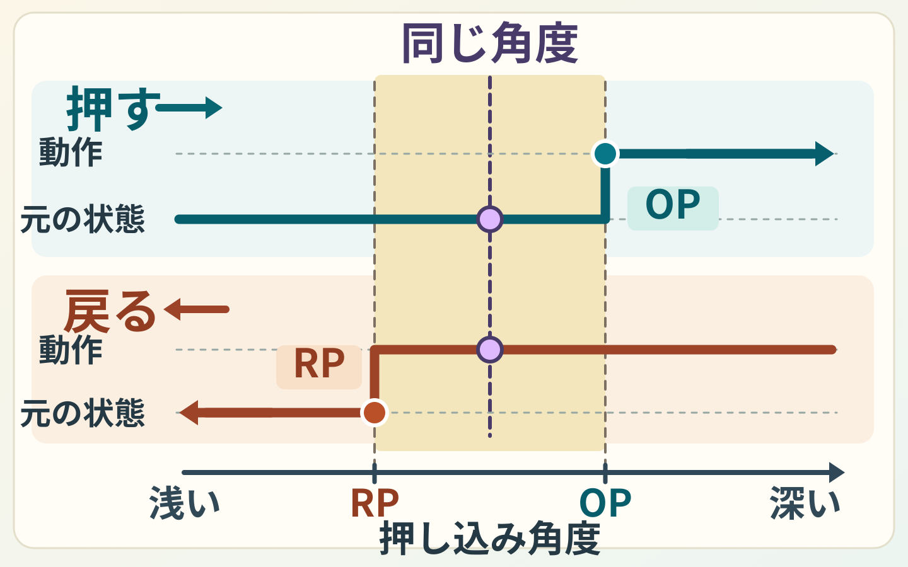
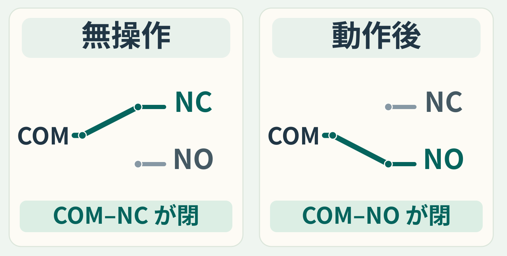

向いている人
- リミットスイッチの仕組みを基礎から知りたい人
- 接触式の検出機器を現場目線で整理したい人
- PLC入力との関係や近接センサとの違いを知りたい人
リミットスイッチは、機械の動きを受けてレバーやプランジャが動き、接点が切り替わる接触式の位置検出スイッチです。
たとえば搬送台が端位置に近づくと、台に付いた当て金（ドッグ）がローラーを押します。レバーが決まった位置を越えたところで、到達を表す接点が切り替わります。リミットスイッチ自体が搬送台を物理的に止めるわけではありません。


後輩ローラーに触れた瞬間が、到達信号の切り替わる位置ですか？

先輩触れた位置と、接点が切り替わる位置は別だよ。押すときと戻るときでも、切り替わる位置は違うんだ。
同じレバーでも、押して切り替わる位置（OP）と戻して切り替わる位置（RP）は異なります。二つの間の動きが応差（MD）です。この間では、押してきた途中か、いったん動作して戻る途中かで、接点の状態が違うことがあります。

オムロン D4C-1220（ローラーレバー形）では、PTは最大25°、MDは最大3°、OTは最小40°です。いずれも機器の規格値で、25°で必ず動作するという意味でも、40°押し増す指示でもありません。規格値同士の引き算では、現物の復帰位置は求まりません。
例として、自由位置から20°動いたという記録だけでは、接点が切り替わったとは言い切れません。使える動きの範囲や動作限度は型式別の取付資料と設備設計を照合し、カタログの上限だけでは決めません。
接点が閉じること、PLC入力がONになること、ラダーの条件が成立することは、順番に考えると混同しません。
1c（切替接点）では、押して動作したときに導通させたいならCOMとNO、無操作時に導通させたいならCOMとNCの組み合わせです。これは接点の読み方で、PLC入力やラダーのON／OFFとは分けて考えます。

型式によって表示や線色が異なるので、実物の型式とメーカーの接点図を照合します。実機に触れる点検は設備を停止し、電源などのエネルギー源を隔離した状態で、設備の安全手順に従ってください。この図は通電中の作業や安全回路の配線例ではありません。
リミットスイッチは当て金が操作部を動かしたか、誘導形の近接センサは金属などの対象が検出範囲に入ったかを見ます。置き換えは、検出する対象・位置・信号の条件が合うかで判断します。
接触式は当て金の向きや摩耗・戻り、誘導形は対象の材質や検出距離が読みどころです。非接触式の選び方は近接センサの基礎にまとめています。
見る順番は当たる → 切り替わる → 離れて戻る → 入力に届くです。ここでは停止時に扱える資料・記録から切り分ける観点だけを扱います。
本記事は通常制御の位置検出が対象です。通常用のリミットスイッチを、安全扉の監視や非常停止の代わりに使う説明ではありません。稼働中の押し操作・位置調整・信号の強制は行わず、実機の点検は設備の安全手順に従ってください。
「当て金で操作部が動く」「押すときのOPで切り替わる」「戻るときのRPで元に戻る」。この三つを分けると、位置と信号を対応づけやすくなります。